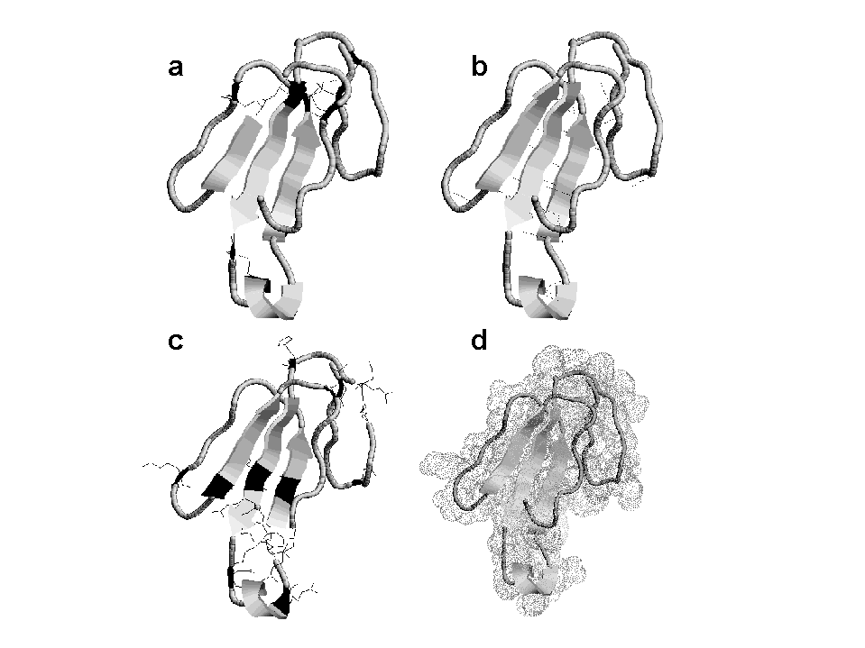

5 Proteínas
5.1 Introdução
Proteínas são o produto de expressão do DNA. Numa simplificação do dogma da biologia molecular, DNA faz RNA que faz proteína. As proteínas conduzem, portanto, as milhares de funções a que foram programadas a partir da informação contida nos seus genes de origem. E dá-lhe simplificação. Proteínas são utilizadas na contração muscular, movimento amebóide, contato célula-célula, captação de íons, transporte de gorduras, eliminação de toxinas, conversão metabólica, produção de energia, resposta imunológica e inflamatória, percepção visual, digestão, e uma infinidade de outras atividades biológicas.
A estrutura de uma proteína, quando se observa as figuras de livros que as contém, é bastante complexa, com voltas, fendas, hélices e folhas. E isso foi exatamente o que os cientistas perceberam quando as observaram pela primeira vez, em suas estruturas atômicas. Assim sendo, e objetivando uma melhor compreensão da estrutura proteica, os cientistas classificaram as estruturas que mais se repetiam nas diversas proteínas, através do formato que apresentavam, como voltas, hélices e folhas. Dessa forma, uma proteína desconhecida pode ser melhor estudada a partir dessas partes, o que evita a questíncula “ué, por onde é que eu começo ?”.
Agora, se olharmos uma proteína qualquer com uma lupa molecular, veremos os aminoácidos ligados uns aos outros como vagões de um trem, através de grupamentos químicos especiais, formando pontes químicas (Figura 5.1). Nesse caso, os aminoácidos de uma proteína podem estar ligados entre si através de ligações peptídicas ou ligações dissulfeto, as únicas ligações covalentes possíveis.
Do ponto de vista metabólico, todas as doenças de fundo hereditário existentes em todos os organismos são fruto, direto ou indireto, de um defeito na produção, manutenção ou equilíbrio de proteínas. Assim, quando se diz que fulano tem um problema de colesterol, que é uma gordura, ou que sicrano tem diabetes, muito açúcar no sangue, na verdade a responsabilidade não é nem do colesterol, e nem do açúcar, mas, outrossim, das proteínas responsáveis pelo metabolismo de ambos. Quando se diz que beltrano está gripado, e que vincristano sarou da gripe com aspirina (o que é conceitualmente impossível), na verdade a gripe do primeiro só teve sucesso pela interação de proteínas do vírus por ela responsável com células do corpo, e que sua eliminação conseguida pelo segundo só o foi pela interação da aspirina com proteínas responsáveis pela resposta inflamatória do mesmo.

5.2 Detalhes
Aminoácidos ligados covalentemente produzem peptídeos (até 15 aminoácidos), polipeptídeos (até 50 aminoácidos) ou proteínas (mais de 50 aminoácidos). A ligação amídica denomina-se peptídica (Figura 5.2), e envolve a combinação de um OH do grupo terminal COOH de um aminoácido com um H do grupo terminal NH2 de outro aminoácido, com liberação de uma molécula de água. A ligação peptídica é co-planar e rígida, devido ao caráter de dupla ligação do C-N no plano (ressonância da carboxila).

Dessa forma, pode-se imaginar uma sequência de aminoácidos ligados como uma sequência de cartas de baralho combinadas pelas arestas, e tendo no centro de cada carta a ligação peptídica. Anatomicamente, as proteínas possuem uma complexidade estrutural grande que determina sua função biológica. Para resolver esse problema, os pesquisadores dividiram sua estrutura em níveis hierárquicos de organização, a saber: a estrutura 1a. (sequência de aminoácidos), 2a. (unidades repetitivas), 3a. (conformação tridimensional), e 4a. (formadas por interações fracas entre estruturas 3a).
A estrutura 2a. é formada principalmente por conformações em \(\alpha\)-hélice, dobramento-\(\beta\), e voltas-\(\beta\), e que, quando combinadas, podem originar subníveis hierárquicos de organização entre a estrutura 2a. e a 3a., tais como as estruturas supersecundárias (\(\beta\)-barril, cela, grampo) ou os domínios (unidades morfo-funcionais independentes na proteína).
O dobramento-\(\beta\) é uma estrutura também mantida por ligações de hidrogênio, desta vez perpendiculares à sequência de aminoácidos, formando uma estrutura em vilosidades que lembra uma folha pregueada. A \(\alpha\)-hélice é formada por uma estrutura helicoidal com 3,6 aminoácidos por volta, mantida por ligações de hidrogênio (NH….CO) dispostas paralelamente ao eixo da hélice, entre n e n+3 resíduos de aminoácidos, e com as cadeias laterais voltadas para fora. As voltas-\(\beta\), por sua vez, são responsáveis pelos dobramentos proteicos entre as estruturas de hélices e folhas de proteínas, permitindo relativa flexibilidade conformacional das mesmas, e consequente controle alostérico (regulação metabólica através de pequenas mudanças conformacionais induzidas por ligantes, como o ATP).
A busca da conformação biológica (nativa) da proteína não se dá por acaso. Durante o enovelamento proteico uma combinação de forças fracas atua simultaneamente para a estabilização da conformação final da proteína. Essas forças incluem ligações de hidrogênio (entre H com O ou N), interações eletrostáticas (entre aminoácidos com cargas de sinais opostos), efeito ou interações hidrofóbicas (tendência de exclusão da água próxima a grupos apolares), e forças de Van der Waals (assimetria eletrônica dos átomos da proteína em tempo infinitesimal, produzindo interação/repulsão entre os mesmos). A Figura 5.3 permite uma visualização destas forças de coesão presentes na estrutura de proteínas.

5.3 Aplicação.
Algumas alterações enzimáticas podem determinar uma modificação na estrutura das proteínas. Assim, o envelhecimento das proteínas pode provocar alterações estruturais na molécula. A fibra de colágeno, por exemplo, a mais abundante proteína dos vertebrados, sofre ligações cruzadas covalentes entre aminoácidos modificados, como hidroxiprolina e hidroxilisina, fazendo com que suas fibras tornem-se mais resistentes. Isso é perceptível até pelo senso comum, quando se diz que uma res idosa possui menor maciez de sua carne que um novilho.
5.3.1 Proteína e nutrição
As fontes convencionais de proteínas de origem animal são: leite e derivados, ovos e os vários tipos de carne. As de origem vegetal são principalmente os grãos, de cereais e leguminosas. Assim, leite e derivados possuem um complexo proteico denominado caseína (caseos = queijo), o qual representa mais de 80% das proteínas do leite de vaca (3.5%). A remoção da caseína láctea resulta num conjunto restante de proteínas (lactoglobulina, lactalbumina, albumina de soro bovino - BSA, imunoglobulinas, transferrina, lactoferrina), peptídeos e aminoácidos livres, o soro do leite.
Ovos possuem 54% das proteínas da clara formada por ovalbumina, sendo as demais constituidas por fibras de ovomucina e de uma solução coloidal de várias proteínas globulares. A gema, por sua vez, é formada por uma mistura de proteínas complexas (glicoproteínas, fosfoglicoproteínas, lipoproteínas).
Existem mais de uma centena de proteínas na carne (músculo esquelético, liso e cardíaco), sendo o conjunto principal formado por mioglobina (transporte de O\(_{2}\) aos tecidos), proteínas da fibra (actina, miosina, proteína C, troponina, tropomiosina, proteína M), e proteínas do estroma (colágeno).
Os grãos, por sua vez, são sub-divididos, quanto ao teor proteico, em cereais (albuminas, globulinas, glutelinas), trigo (mais de 20 proteínas), milho (14%, principalmente zeína, outras são típicas dos cereais), feijão (30%, principalmente de reserva, albuminas, lectinas e globulinas, além de inibidores proteicos de serino proteases). Nas folhas, existe grande variedade de proteínas.
O consumo de pescado leva em consideração principalmente sua fonte de proteínas, devido ao alto teor de aminoácidos essenciais no músculo, essencialmente àqueles escassos em vegetais. Nos solos, parte da proteína encontrada também é devida ao conjunto de microorganismos presentes.
5.3.2 Suplementos dietéticos na produção animal.
Suplementos alimentares podem ser classificados como energéticos ou proteicos. Entre os primeiros encontram-se os farelos de cereais (milho, sorgo, trigo), os quais disponibilizam grande aporte de energia com pequenas ofertas de alimento (0,5-1%/kg animal). Os suplementos proteicos, entre os quais são exemplos o farelo de soja e o caroço de algodão, são normalmente adicionados à nutrição animal (0,2-3 %/kg animal) para a melhoria do metabolismo microbiano e digestibilidade de forragens. Neste sentido os suplementos proteicos atuam pela necessidade da microbiota no uso de nitrogênio liberado de proteínas e aminoácidos na forma de amônia. Outras classes de suplementos envolvem os minerais e vitamínicos.
Todas estas formas de complementação nutricional são bastante úteis frente a períodos críticos de rebanho (gestação, lactação), patologias variadas e períodos de estio. É conhecido que a dieta de proteína bruta na ordem de 14 % associada a vitamina E a 25 mg/kg é suficiente para assegurar o desempelho produtivo e reprodutivo satisfatório de matrizes de frangos de corte durante a fase de produção, estando a deficiência da segunda relacionada a problemas de fertilidade, viabilidade embrionária e produção de ovos.
Seja qual for a fonte proteica é mister que se conheça as necessidades nutricionais exigidas pela dieta em diferentes animais, e em diferentes estágios de desenvolvimento e situação fisio-patológica, já que deficiências de ntrogênio proteico são tão deletérias quanto excessos do mesmo. Além disso, deve-se ter em mente a qualidade da fonte proteica, já que a mesma é definida pelo teor de aminoácidos essenciais presentes (Lys é fundamental no desenvolvimento de frangos e potros). A necessidade de proteína em potros em crescimento, por exemplo, está em torno de 15 %, ao passo que, decorridos 12 meses, esta necessidade dietética cai para 13 %.
Contrariamente, a necessidade proteica em peixes é bastante elevada, entre 35 % a 50 % (trutas), muito superior a aves (18 %), suínos (16 %) e ruminantes (11 %). Esses altos níveis requeridos parecem estar relacionados a perda de amônia protonada pelas brânquias, devido a alta solubilidade de pequenas moléculas e alguns lípides, à manutenção da alcalinidade relativa e balanço iônico do fluido interno, realizado às custas de trocas de amônia por sódio nas brânquias, e a excreção natural de nitrogênio na forma de amônia, mais do que uréia e ácido úrico, em torno de 90 %. Carpa e dourado excretam 6 a 10 vezes mais amônia pelas brânquias que pelos rins.
Uma excessão aos pequenos níveis relativos de proteína na dieta de ruminantes ocorre com vacas de alta produção de leite. Nesses animais, pesquisas tem sugerido um nível de 35 a 40 % de proteínas bypass (não degradáveis no rúmen) ao início da lactação, o que parece não surtir efeito com animais de pequena e média produção. Numericamente, uma vaca produzindo 10 kg de leite tem em média uma necessidade diária de proteína útil em torno de 500 g.
5.3.3 Proteínas como marcadores de produtividade.
Diversas são as proteínas utilizadas como índices de viabilidade e qualidade em produtividade animal. Dentre essas, podemos mencionar os níveis de ovomucina presente na clara de ovos como marcador da qualidade do produto sob armazenamento. Essa proteína, responsável pela viscosidade da clara, perde progressivamente suas interações físico-químicas com outra proteína, lisozima, resultando num produto mais liquefeito ao longo do tempo. Ovalbumina S e placalbumina, também marcadores da qualidade de ovos, são encontrados, a primeira, em mais de dois terços em ovos estocados a mais de 6 meses, e a segunda, na presença do contaminanate microbiano Bacillus subtilis.
5.3.4 Proteína ideal.
Aminoácidos em excesso sofrem desaminação, sendo o nitrogênio excretado como uréia pelos mamíferos, ácido úrico por aves e répteis, e amônia por peixes de água doce, refletindo todo o processo em gasto de energia para o animal. Além disso, aminoácidos oferecidos em excesso na dieta tem mostrado não contribuir para a melhoria do desempelho, sendo utilizados de forma ineficiente. Dessa forma surge o conceito de “proteína ideal”, uma mistura de aminoácidos e proteína cuja composição atenda às exigências nutricionais para os processos de manutenção e crescimento. Nestes termos, acredita-se que a mistura de aminoácidos deva contar proporções exatas dos 20 conhecidos das estruturas proteicas, para favorecer a deposição de proteínas com a máxima eficiência.
5.3.5 Desbalanço nitrogenado.
Deficiências de nitrogênio podem resultar em redução na taxa de crescimento, mal formação de tecidos orgânicos (ossos, músculos, tendões), emagrecimento progressivo, problemas reprodutivos, perda de peso, e queda da resistência orgânica. Excessos de nitrogênio proteico, por sua vez, podem ocasionar ganho excessivo de peso, maior deposição de gordura, doenças ortopédicas de desenvolvimento, enterotoxemia, problemas hepáticos e renais, cólicas e timpanismo, trasnspiração excessiva, problemas cutâneos, e mal recuperação após esforço físico.